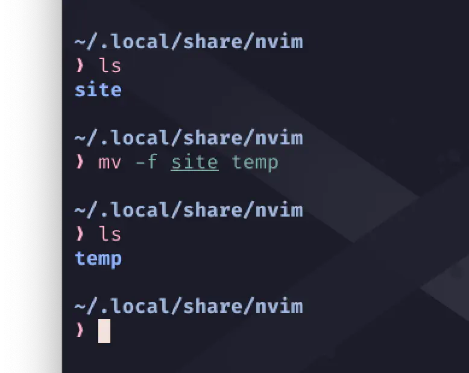
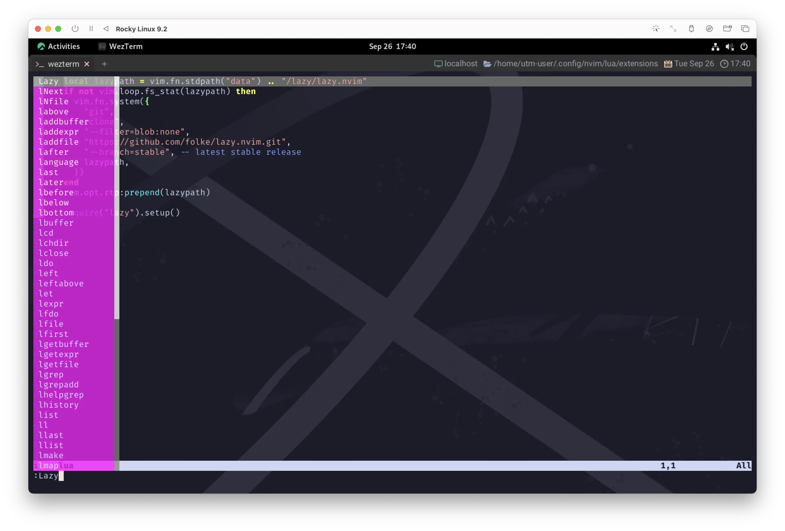

💤 lazy.nvim
When I wake up early in the morning
Lift my head, I’m still yawning
朝早く目が覚めると
頭を上げても、あくびが止まらない
もう9月の下旬なんですが、気温が思っているほど下がりません...🥵
まあそれでも、8月に比べたら多少は涼しくなってきたので、ぐっすり眠れるようになってきました😴🙏
これなら💤 lazy.nvimへのお引越しも捗ります❗
lazy.nvim is a modern plugin manager for Neovim.
lazy.nvim は Neovim のモダンなプラグインマネージャーです。
始めてしまえば難しいことは何一つありません😉
ただ、それなりに物量はあるので、この節ではlazy.nvimの セットアップ までを😌
そして次の節で、packer.nvimからlazy.nvimへの 移行 という二本立てでお送りします😪
✨ Features
新しいベッドは、とっても大きくて気持ちよさそうです🤗
- 📦 Manage all your Neovim plugins with a powerful UI
- 🚀 Fast startup times thanks to automatic caching and bytecode compilation of Lua modules
- 💾 Partial clones instead of shallow clones
- 🔌 Automatic lazy-loading of Lua modules and lazy-loading on events, commands, filetypes, and key mappings
- ⏳ Automatically install missing plugins before starting up Neovim, allowing you to start using it right away
- 💪 Async execution for improved performance
- 🛠️ No need to manually compile plugins
- 🧪 Correct sequencing of dependencies
- 📁 Configurable in multiple files
- 📚 Generates helptags of the headings in
README.mdfiles for plugins that don't have vimdocs - 💻 Dev options and patterns for using local plugins
- 📊 Profiling tools to optimize performance
- 🔒 Lockfile
lazy-lock.jsonto keep track of installed plugins - 🔎 Automatically check for updates
- 📋 Commit, branch, tag, version, and full Semver support
- 📈 Statusline component to see the number of pending updates
- 🎨 Automatically lazy-loads colorschemes
- 📦 強力なUIですべてのNeovimプラグインを管理
- 🚀 Luaモジュールの自動キャッシュとバイトコードコンパイルによる高速起動
- 💾 浅いクローンではなく部分的なクローン
- 🔌 Lua モジュールの自動遅延ロード、イベント、コマンド、ファイルタイプ、キーマッピングの遅延ロード
- ⏳ Neovim を起動する前に、不足しているプラグインを自動イン ストールし、すぐに使い始めることが可能
- 💪 非同期実行によるパフォーマンスの向上
- 🛠️ 手動でプラグインをコンパイルする必要なし
- 🧪 依存関係の正しい順序付け
- 📁 複数のファイルで設定可能
- 📚 vimdocs を持たないプラグインのために
README.mdファイルの見出しの helptag を生成する - 💻 ローカルプラグインを使用するための Dev オプションとパターン
- 📊 パフォーマンスを最適化するためのプロファイリングツール
- 🔒 インストールされたプラグインを追跡する
lazy-lock.jsonファイル - 🔎 アップデートの自動チェック
- 📋 コミット、ブランチ、タグ、バージョン、完全な Semver のサポート
- 📈 Statusline コンポーネントで保留中のアップデートの数を表示
- 🎨 自動的に colorschemes を遅延ロードする
おまけにふわふわ〜☁️
When I’m in the middle of a dream
Stay in bed, float up stream
夢の中にいるとき
ベッドに寝たまま、流れに身を任せる
⚡️ Requirements
こんなのはもう些細な要求ですね。
- Neovim >= 0.8.0 (needs to be built with LuaJIT)
- Git >= 2.19.0 (for partial clones support)
- a Nerd Font (optional)
♻️ Evacuate the packer.nvim
lazy.nvimのインストールの前に、まずはpacker.nvimを退避しておきましょう❗
📋 extensions/init.lua
extensionsディレクトリにいるinit.luaを、packer.luaとでも名前を変えてあげるのがいいんじゃないかと思います。
そのままextensionsディレクトリに置いておいてもいいし、どこか他のディレクトリに逃がしてあげてもいいです。
あとは、このままでは次回のnvim起動時に「init.luaが無いぞー❗」って怒られてしまうので、
新しくからっぽのinit.luaを作成しておきましょう😉
これでだいじょうぶ😆
📃 packer_compiled.lua
そこから上のディレクトリ、~/.config/nvimにあるplugin/packer_compiled.luaについても、
削除しておきましょう。
pluginディレクトリの中身がpacker_compiled.luaのみであれば、ディレクトリごと削除しちゃって構いません😉
もし他にファイルが存在しているようなら気をつけて❗
この場合はpacker_compiled.luaだけを狙い撃ちしましょう。
rm plugin/packer_compiled.lua
📎 packer
さらにもう一箇所❗
cd ~/.local/share/nvim
これはもしかしたら環境によって変わるかもしれません。
あらかじめnvimからディレクトリを確認しておきましょう。
で、このディレクトリを覗いてみるとsite/pack/packerディレクトリが存在するはずなので、
これも削除してしまって大丈夫です。
このディレクトリにはpacker.nvim本体も存在するので、
削除後、再びpacker.nvimを再度使用したい場合は、git cloneからやり直す必要があります。
慎重を期すのであれば、ディレクトリ名を変えるだけでも良いです。 
まあ、こんなとこでしょう。
Please, don’t wake me, no, don’t shake me
Leave me where I am, I’m only sleeping 1
お願い、起こさないで、いや、揺すらないで
僕のことは放っておいて、眠っているだけなんだ
それでは次項からlazy.nvimをセットアップしていきましょう😆
📦 Installation
packer.nvimの時にはあらかじめgit cloneで配置しておくように案内されていましたが、
lazy.nvimは以下のコードを入れておいてくれれば勝手にインストールしとくよ〜、と案内されています。
You can add the following Lua code to your init.lua to bootstrap lazy.nvim:
以下の Lua コードを init.lua に追加して、lazy.nvim を起動することができます：
早速、さっきtouchで作ったからっぽのinit.luaに入れてあげましょう❗
local lazypath = vim.fn.stdpath("data") .. "/lazy/lazy.nvim"
if not vim.loop.fs_stat(lazypath) then
vim.fn.system({
"git",
"clone",
"--filter=blob:none",
"https://github.com/folke/lazy.nvim.git",
"--branch=stable", -- latest stable release
lazypath,
})
end
vim.opt.rtp:prepend(lazypath)
そしたらnvim を一度終了して再度起動してみましょう😆
これだけでもう、コマンドからLazyを呼び出せるはずです❗

:Lazy
まあ🤭 Poison☠️ 🩷
Everybody seems to think I’m lazy
みんな僕のことを怠け者だと思ってる
初心に帰れる、やさしい毒🤤
I don’t mind, I think they’re crazy
気にしないさ、彼らこそ狂ってる
👩⚕️ checkhealth
ℹ️ It is recommended to run :checkhealth lazy after installation.
インストール後、:checkhealth lazyを実行することを推奨します。
...とのことなのでやっておきましょう。:cheでも同じです😋
はい、オールグリーン😉
🔌 Plugin Spec
で、lazy.nvimも色々と設定があるわけなんですが、数が多いので参照だけ示します。
| Property | Type | Description |
|---|---|---|
| ... | ... | ... |
これまでpackerで使っていたものをどうやって移行するかについては、
📦 Migration Guide が用意されています❗
冒頭でも触れましたが、移行は次の節で触れることにして、まずは基盤を作っていく流れにします😴
Running everywhere at such a speed
Till they find there’s no need
こんなスピードででどこまでも走る
必要ないとわかるまで
⚙️ Configuration
lazy.nvim comes with the following defaults:
lazy.nvim のデフォルトは以下の通りです：
わたしもまだ使い始めて日が浅いので、深く見つめたわけではありません。
ただ、なんか一個すごい興味惹かれるやつありますね🤩
📊 performance
こういうの大好き❗
{
performance = {
cache = {
enabled = true,
},
reset_packpath = true, -- reset the package path to improve startup time
rtp = {
reset = true, -- reset the runtime path to $VIMRUNTIME and your config directory
---@type string[]
paths = {}, -- add any custom paths here that you want to includes in the rtp
---@type string[] list any plugins you want to disable here
disabled_plugins = {
-- "gzip",
-- "matchit",
-- "matchparen",
-- "netrwPlugin",
-- "tarPlugin",
-- "tohtml",
-- "tutor",
-- "zipPlugin",
},
},
},
}
🔸 rtp
やあん🥱
🔹disabled_plugins
コメントアウトされているものをいくつか外してみましょう❗
local opts = {
performance = {
rtp = {
disabled_plugins = {
'gzip',
'matchit',
--'matchparen',
--'netrwPlugin',
'tarPlugin',
'tohtml',
'tutor',
'zipPlugin',
},
},
},
}
わたしは以下の2つをコメントアウトのままにしています。
◽matchparen
人によっては不要だと思うかもしれませんが、わたしはこれ好きなんですよね〜😆
custom_highlights でカスタマイズしているぐらいなので❗
◽netrwPlugin
これは「nvim-treeを使う場合は無効化しといてね」でお馴染みの netrw です😉
もうすでに無効化するコードが入っているので、ここでは必要はないかな〜っていう考え方です。
まあ、どっちで無効化してもへーきなんじゃないかな⁉️
🧪 vim.loader
もう一個だけやっておきましょう🐱
少し古いニュースを引っ張り出しますが😅
• Added a new experimental vim.loader that byte-compiles and caches Lua files.
To enable the new loader, add the following at the top of your init.lua
Luaファイルをバイトコンパイルしてキャッシュする新しい実験的なvim.loaderを追加。
この新しいローダーを有効にするには、init.luaの先頭に以下を追加します。
vim.loader.enable()
これはもう素直に、トップのトップに追加しておきましょう😌
vim.loader.enable() vim.loader.enable()
Enables the experimental Lua module loader:
実験的な Lua モジュールローダーを有効にする:
• overrides loadfile
loadfile を上書きします。
• adds the Lua loader using the byte-compilation cache
バイトコンパイルキャッシュを使用する Lua ローダーを追加します。
• adds the libs loader
libs ローダーを追加します。
• removes the default Nvim loader
デフォルトの Nvim ローダーを削除
もし "実験的な機能" は嫌だーってなるのであれば、これはスキップしても問題ない😗 ...とは思うんですが...。
feat(lua): add vim.loader #22668
これをうっすら見た感じ、入れておくとlazy.nvimとNeovimとの親和性が上がりそうな気はします🫶
Please, don't spoil my day, I'm miles away
And after all, I'm only sleeping
お願い、一日を台無しにしないで、僕はぼんやりしてる
やっぱり、僕は眠っているだけなんだ
😴 Waiting for a sleepy feeling
これだけやれば、ぐっすり眠る準備はバッチリでしょう😉
次回はMigration Guideに従ってpackerからの完全移行を目指します❗
1: I'm Only Sleeping (by The Beatles): Lennon が書いた「I'm Only Sleeping」の歌詞の最初の草稿は、1966年の手紙の裏に書かれており、 歌詞に時折読み込まれる薬物による陶酔感よりも、むしろベッドにいることの喜びについて書いていたことがうかがえる。 ツアー中でない間、Lennon は通常、睡眠、読書、執筆、テレビ鑑賞に時間を費やしており、しばしばドラッグの影響下にあった。 1966年3月4日に発行された Evening Standard 紙の記事で、 Lennon の友人である Maureen Cleav は「彼はほとんどいつまでも眠ることができ、おそらくイギリスで最も怠け者だ」と書いている。
2: 2つ目のブリッジの前のブレイクでは、あくびの音が聞こえ、その前に Lennon が McCartney に "Yawn, Paul." と言った。